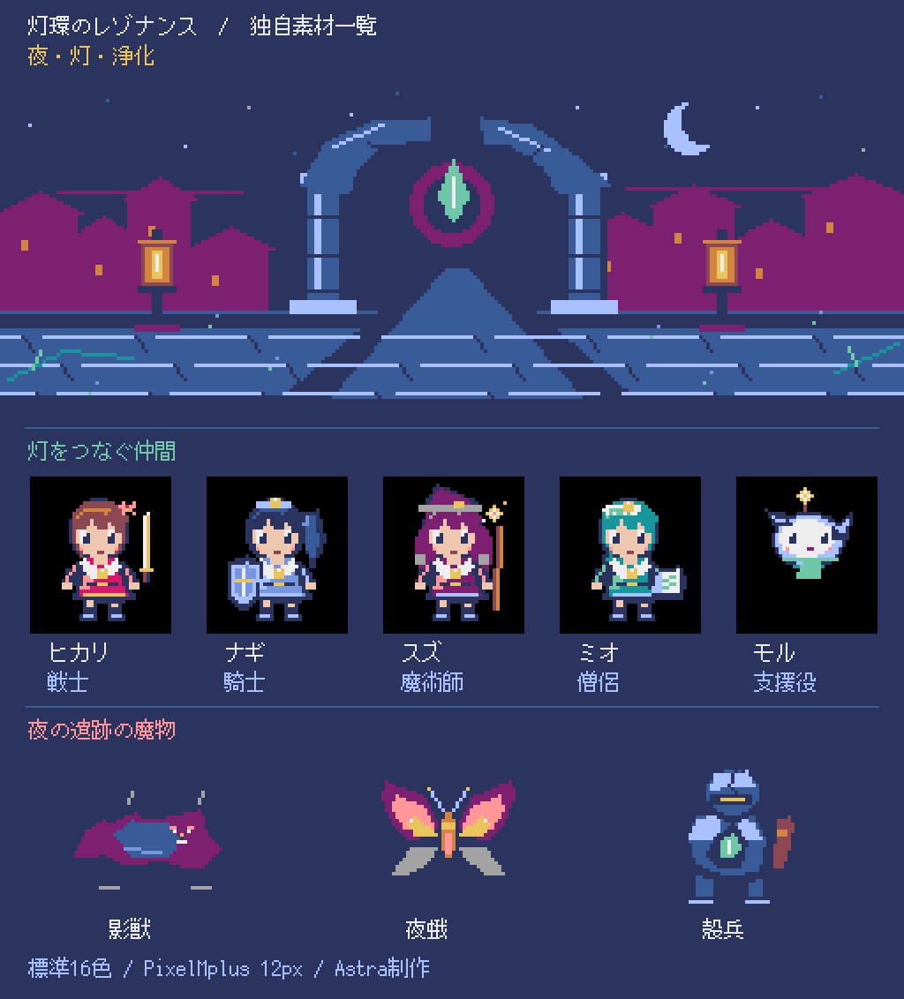

戦闘コア試遊版
灯環のレゾナンス
更新日: 2026年9月7日 12:57 JST
魔法少女に命令し、作戦と回復支援を組み合わせて戦う、ターン制の戦闘試遊です。最初はヒカリ1人で開始し、検証用メニューでは4人編成も試せます。
戦闘コアの試遊版です。仲間の勧誘・装備・育成・探索・保存、本編とクリア後の内容はこれから実装します。
試遊と素材
ゲームを開く
再生ボタンで音楽と効果音を確認できます。
戦闘音楽
効果音
前回からの変化
- ブラウザで遊べる戦闘試遊と、ドット絵・BGM・効果音のプレビューを用意しました。
- 入口とメインループを整理し、戦闘・メニュー・入力・描画・音をそれぞれの部品へ分離しました。
- 画面下端の操作説明に余白を設け、決定入力が重複しないことを確認しました。
完成した内容
- 1人での開始、個別命令・作戦・回復支援、勝敗・再挑戦まで遊べます。4人編成の検証用戦闘もあります。
- 構造改善20項目とWeb版の検証を完了しました。実機検証1項目は保留しています。
残作業
- 報酬・勧誘・装備・育成・保存を戦闘につなぐこと。
- 新しい仲間・敵・技能・装備を増やし、育て方や戦い方の選択肢を広げること。
- 本編とクリア後の内容を作り、長時間の遊び心地を調整すること。
問題点
- 戦闘だけを試す開発途中の版です。戦利品・勧誘・育成・保存はまだ使えません。
- Web版は外部の実行環境を読み込むため、起動にはインターネット接続が必要です。
- 現在の版の実機検証と探索開発は保留しています。
起動・操作・再生方法
- 「ゲームを開く」から進み、表示される開始画面をクリックするとタイトルが開きます。
- 「はじめる」は1人で開始します。「4人編成の検証」では最大編成の戦闘を試せます。
- 上下で項目を選び、ZまたはSpaceで決定、Xで戻ります。左右で戦闘ログを送り、Vで音量を切り替えます。
- 個別命令・作戦・回復支援を選び、「ラウンド実行」で戦闘を進めます。決定するたびに1行動ずつ確認でき、考えている間は戦況が進みません。
- 勝敗画面では再挑戦かタイトルへ戻る操作を選べます。再挑戦するとHP・MP・支援などが初期状態に戻ります。
- 素材欄ではドット絵とBGM・効果音を確認できます。音は再生ボタンを押すと始まります。
- ローカルで遊ぶ場合は、開発用ファイルがあるWindows環境で uv run python main.py を実行します。終了はゲームのウィンドウまたはタブを閉じます。
- この試遊にはセーブ機能がありません。タブを閉じると最初からの開始になります。
確認したこと
- 全346件の自動検証が成功しました。
- Web版で1人・4人の戦闘、技能・作戦・支援、勝敗・再挑戦を操作し、同じ操作の再現結果と照合しました。
- 日本語表示と入力の重複回避を確認しました。ゲーム内のBGM・6効果音、音量・消音の実出力と音の構成を評価しました。
- Web版の確認結果は独立レビューで承認済みです。
未実施の確認
- 公開先での試遊・素材の確認結果は、公開後の検証記録へ追記します。
- 現在版の実機での主要操作・表示・音。
- 戦利品・勧誘・育成・探索・保存をつないだ本編とクリア後の体験。
次の約3時間の成果
- 公開先で試遊と素材が動くことを確認します。
- 戦闘で得た報酬を仲間や装備へ使う仕組みの計画を整え、実装へ進みます。
更新履歴
2026年9月6日
最初の開発記録
基本ウィンドウと戦闘ルールの確認からスタート。試遊・素材は準備中として、現在地と次の目標を掲載しました。
2026年9月6日 20:05 JST
チェックポイント01：戦闘の再現と素材の確認
1人・4人の勝利と敗北、行動時に判断する作戦を再現できるようになりました。画像表示と音の再生動作が進み、聴感確認・戦闘画面・Web試遊が次の課題です。
2026年9月6日 23:53 JST
チェックポイント02：戦闘画面と実機操作
日本語の命令・作戦・支援画面を接続し、1人・4人の勝利、敗北と再挑戦を確認しました。Web試遊と音の聞き分けが残っています。
2026年9月7日 02:53 JST
チェックポイント03：Web起動と構造改善の開始
ローカルWeb版のタイトルと1人戦闘を確認。互換性の比較基準を固めて構造改善へ進み、探索要件も承認しました。公開試遊は準備中です。
2026年9月7日 05:51 JST
チェックポイント04：戦闘内部の整理と入力の分離
構造改善9項目をレビュー・保存。確定版219件の検証が成功し、メニューの分離へ進みました。入口の整理と公開試遊は未完了です。
2026年9月7日 08:51 JST
チェックポイント05：メニュー・音・描画の分離
構造改善15項目を独立レビュー・保存。確定版293件の検証と実描画を確認しました。場面の接続・入口の整理・公開試遊は未完了です。
2026年9月7日 11:45 JST
チェックポイント06：入口の整理とWeb検証
構造改善19項目と全345件の検証を保存。最新Web候補で1人の勝利・再挑戦と4人初期表示を確認し、Web統合検証を進めています。
2026年9月7日 12:57 JST
戦闘コア試遊版を用意
構造改善20項目とWeb統合検証を完了。1人・4人の戦闘、勝敗・再挑戦、表示・入力・音を確認し、試遊と素材をページへ組み込みました。